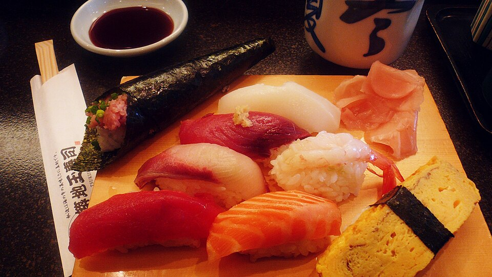

Rice in Japan

Where it is grown: Niigata, Hokkaido, and Tohoku
Production (2024): 10,142,000 tonnes
Popular dish: Sushi

Where it is grown: Niigata, Hokkaido, and Tohoku
Production (2024): 10,142,000 tonnes
Popular dish: Sushi